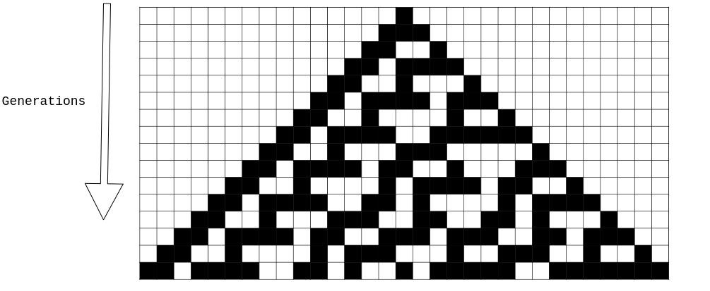
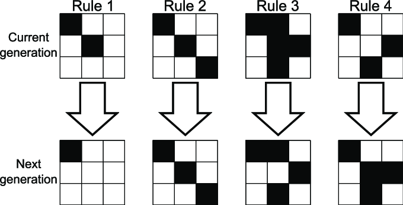
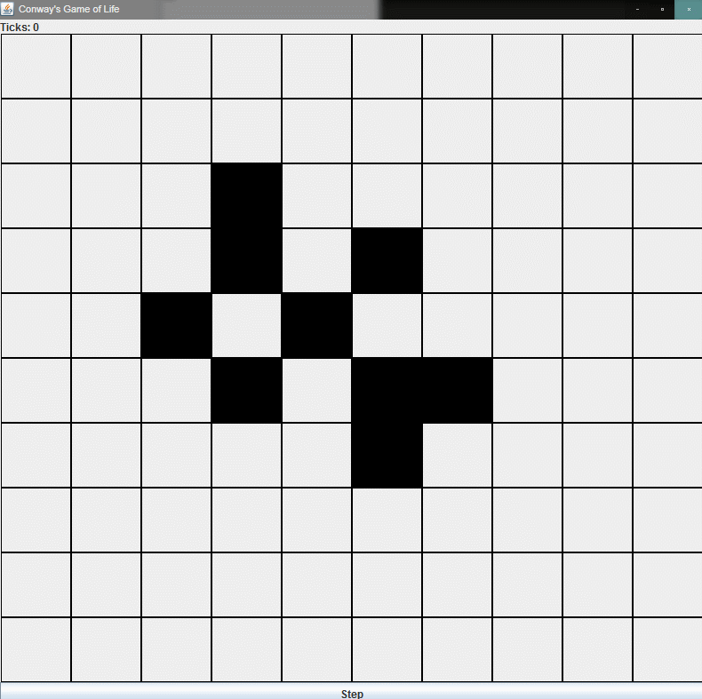
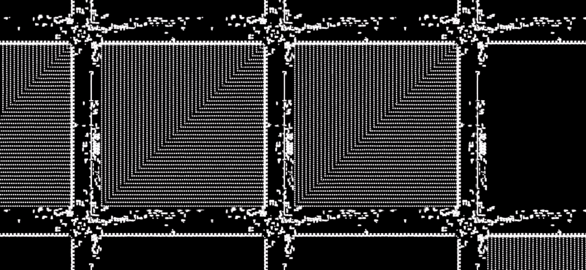

Diving into Cellular Automata
I remember Vsauce(Michael Stevens) tweeting out a link to one of Alan Zucconi's videos about John Conway's game of Life. This is what pulled me into the world of Cellular Automata.
Wolfram's Rule-30 is something that had me scratching my head, but why? 🤔
Elementary Cellular Automaton and Rule 30:
Consider a 1-D realm with alive or dead cells. As we iterate over generations, the new state of a cell will only depend on its nearest neighbors and past state. A set of rules for this 1-D world could be:
Note: cells below represent new cell states. Rule outcomes encoded in binary -> 30 = 000111102
Starting from one single black cell we get the following generations.

The remarkable thing about this rule is its chaotic nature, notably the middle column. In fact, this rule is often employed to generate random integers. Generating chaos from rules 👀
In case you're up for a challenge, Wolfram poses 3 problems concerning random nature of the center column, $30,000 for 3 problems -> www.rule30prize.org
Conway's Game of Life
Named after its creator John Horton Conway, it features an infinite 2D grid-world of cells, having 2 possible states, live or dead. Each cell can only perceive its 8 neighbors, with rules shown below:

Rules for Game of Life:
- Any live cell with two or three live neighbours survives.
- Any dead cell with three live neighbours becomes a live cell.
- All other live cells die in the next generation. Similarly, all other dead cells stay dead.

Turns out, Game of Life is Turing complete. Paul Rendell designed a Turing Machine in Game of Life back in 2000.

Later in the year 2016, Nicolas Loizeau designed a programmable 8-bit computer in Game of Life which too is a sight to behold.

Screenshot from Nicolas Loizeau's Video
Simulating Life Within Life - Droste Effect in Conway's Game of Life
Droste effect is the effect of a picture recursively appearing within itself. The game of life is turing complete, which enables one to simulate Life within itself as demonstrated in this video by Philip Bradbury. Following is a screenshot from Bradbury's video.

Screenshot from Philip Bradbury's Video
Life is a game with no players, a game that never ends, a game that sometimes plays itself 🎮